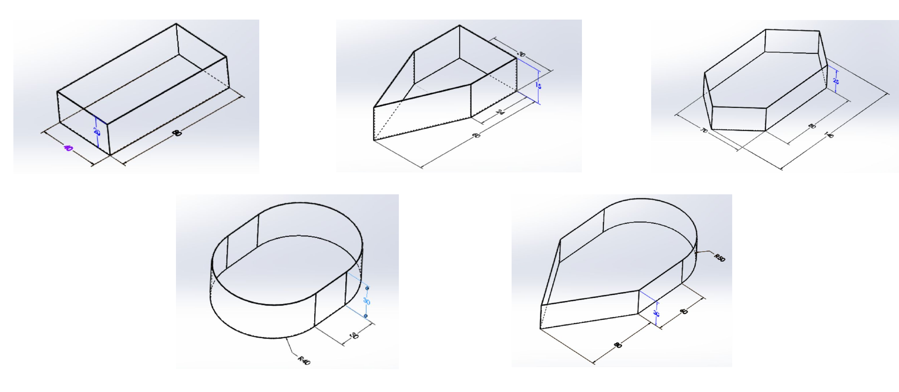
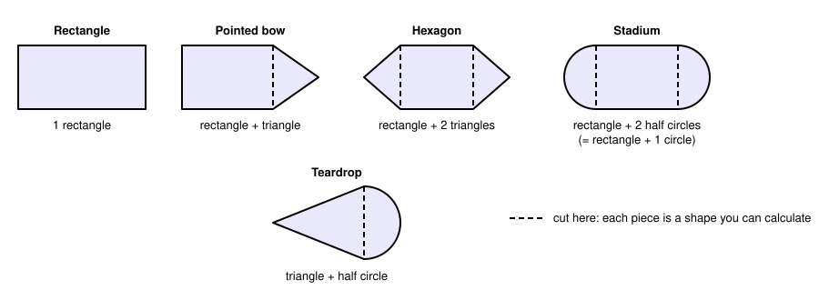
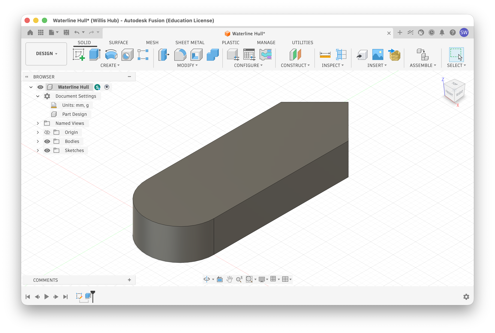
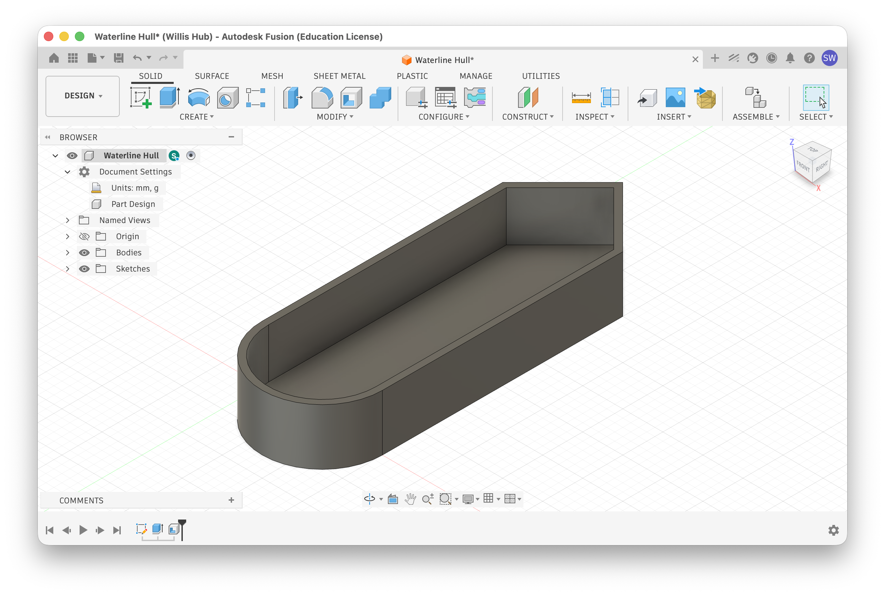
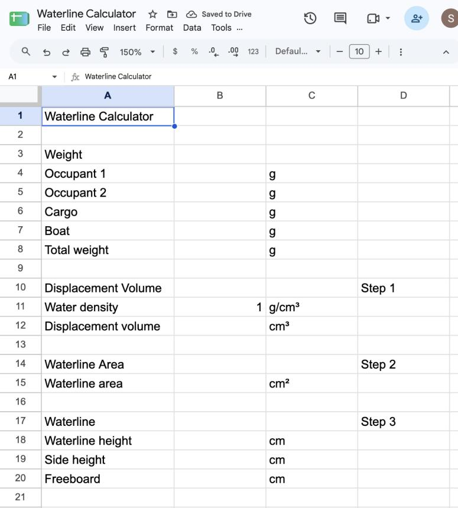
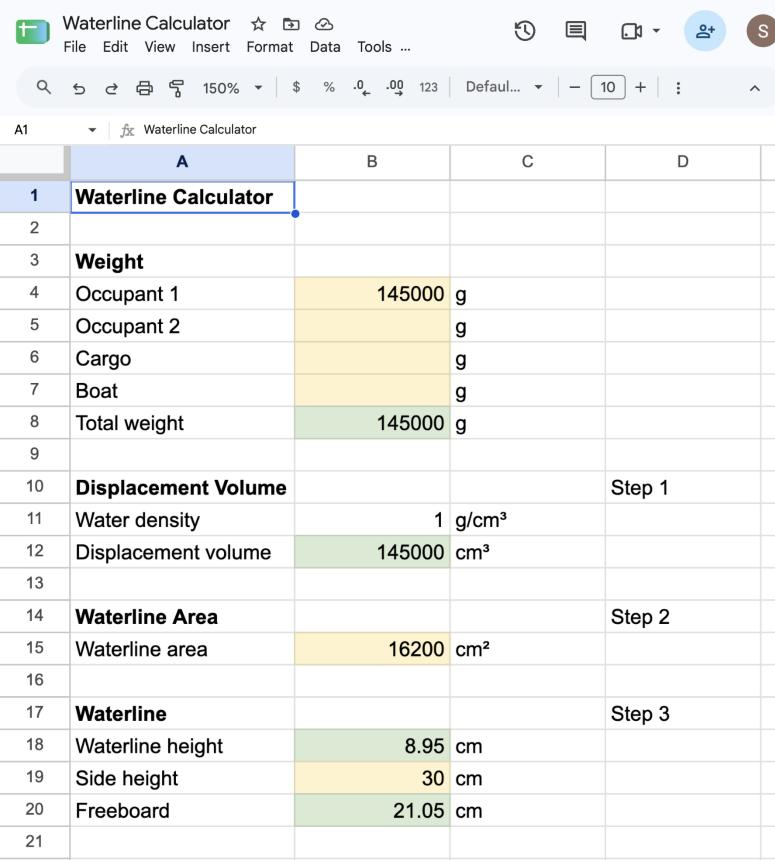

Waterline Model Boat
Rule 10 of the competition says you will draw a waterline around your boat before race day. In this lab you'll design and print a small hull, build the calculator that predicts its line while the printer works, draw the line, and float it to see how close you came.

Overview
You'll design a small flat-bottomed hull in Fusion from simple shapes and send it to the 3D printer first. While it prints, you'll make a Google Sheets calculator that turns a boat's weight and footprint into a waterline height, using the three steps on the Calculate Yeer Waterline page. Then you'll load the printed hull with weights, draw the waterline your calculator predicts, and float it. The calculator is yours to keep: you'll use it again when you size the real boat.
This is a test hull, not your boat
The hull you print here is a small, boring box built to test the calculation. It is not a model of your race boat. You'll design the real boat separately, later, with everything you learn here.
Materials
- Fusion, and access to the 3D print queue
- Digital scale (reads in grams)
- At least 50 g of washers
- Calipers or a metric ruler
- Felt-tip permanent marker
- Tub of water and a towel
You've got it when…
- Your printed hull has vertical sides, a flat bottom, and a footprint no larger than 100 mm × 70 mm.
- Your spreadsheet turns any set of weights and a waterline area into a waterline height and a freeboard, and recalculates by itself when you change a number.
- Your hull has a marker line at the height your spreadsheet predicted for its real weight plus the washers.
- You floated it, photographed it, and recorded how far the water landed from your line.
Collaboration & AI
Work: On your own. Compare numbers with a neighbor all you like, but build your own spreadsheet and your own hull.
AI — AIAS Level 1, No AI: The point of this lab is to do the calculation yourself once, so that the spreadsheet is a tool you understand rather than a box that spits out a number. Set AI aside. What the levels mean.
Planing Hulls Are Made of Simple Shapes
The waterline calculation on the wiki page assumes a rectangular bottom. Real boats rarely cooperate. A planing hull is a flat-bottomed hull with vertical sides, the kind cardboard builds well, and its footprint can be any shape you can cut from a sheet. The slide you saw in class shows five of them.

The trick is that every one of those footprints is a few simple shapes glued edge to edge. Cut the pointed bow off a hull and what's left is a rectangle; the piece you cut off is a triangle. The waterline area is the sum of the pieces. Here are the pieces you'll need.
| Shape | Area formula | In Sheets |
|---|---|---|
| Rectangle | length × width | =L*W |
| Triangle | ½ × base × height | =0.5*B*H |
| Circle | π × radius² | =PI()*R^2 |
| Half circle | ½ × π × radius² | =0.5*PI()*R^2 |
| Trapezoid | ½ × (top + bottom) × height | =0.5*(T+B)*H |
Replace L, W, B, H, R, and T with the cells that hold those
numbers. The "height" of a triangle or trapezoid is measured straight
across, at a right angle to its base, not along the slanted edge.
And here is how the five hulls from the slide come apart.
| Hull | Pieces | Waterline area |
|---|---|---|
| Rectangle | 1 rectangle | L × W |
| Pointed bow | rectangle + triangle | (L × W) + (½ × W × bow length) |
| Hexagon | rectangle + 2 triangles | (L × W) + 2 × (½ × W × point length) |
| Stadium | rectangle + 2 half circles | (L × W) + π × (W ÷ 2)² |
| Teardrop | triangle + half circle | (½ × W × nose length) + ½ × π × (W ÷ 2)² |
Worked example: the pointed bow from the slide
The slide's pointed bow is a 40 cm × 60 cm rectangle with a 24 cm long point on the front. Rectangle: 40 × 60 = 2,400 cm². Triangle: ½ × 40 × 24 = 480 cm². Waterline area: 2,880 cm². That is 20 percent more area than the rectangle alone, which means a boat of the same weight sits 17 percent higher in the water, free of charge.
Remember this for the real boat
For the test hull, Fusion will hand you the waterline area with one click. The real boat won't be in Fusion. You'll measure the cardboard with a tape, break the footprint into these pieces, and add up their areas by hand. Pick a shape for the test hull whose area you could also work out from this table, so you've practiced once.
Design and Print a Test Hull
Keep it small, plain, and honest: a flat bottom, vertical sides, and a footprint made of the shapes above. The constraints are tight on purpose so that it prints in a reasonable time and the math stays simple.
| Constraint | Limit |
|---|---|
| Footprint | fits inside 100 mm × 70 mm |
| Hull height | 25 mm maximum |
| Floor and walls | 2 mm thick |
| Sides | vertical, no flare, no taper |
| Shape | two or more simple shapes from the table above (a plain rectangle is allowed but earns no style points) |
| Pieces | one solid body, printed in one piece, flat bottom on the bed |
-
In Fusion, create a new design and save it as
Waterline Hull. -
Start a sketch on the bottom plane (XY). Draw your footprint from simple shapes: a 2-Point Rectangle for the body, then a Line for each side of a pointed bow, or a Center Point Arc for a rounded end, with the shapes sharing an edge.
-
Use Sketch Dimension (D) to set every length and radius, and check that the overall footprint fits inside 100 mm × 70 mm.
-
Finish Sketch, then Extrude (E) every profile at once to your hull height, 25 mm or less. Picking all the profiles together makes a single body.
Your model should look like this.

- Click Modify ▸ Shell. Click the top face of the body to remove
it, set Inside Thickness to
2 mm, and click OK. The solid block becomes an open box with a 2 mm floor and 2 mm walls, which is the hull.
Your model should look like this.

-
Use Inspect ▸ Measure and click the bottom face of the hull. The dialog reports its Area in mm². Write that number down; it is the hull's waterline area, the footprint the water sees, and it is the one number the spreadsheet can't calculate for you. While you're there, click a wall to confirm it is 2 mm thick.
Square millimeters are not square centimeters
Fusion measures in mm². The spreadsheet wants cm². There are 10 mm in a centimeter, so there are 10 × 10 = 100 mm² in a cm². Divide Fusion's area by 100, not by 10. A 6,000 mm² footprint is 60 cm².
-
Export the body as a mesh (right-click the body in the Browser ▸ Save As Mesh, format 3MF).
-
Open the 3MF in PrusaSlicer and choose the 0.28mm DRAFT print setting from the Print settings drop-down. Draft layers are thick, which is exactly what you want: this hull is a test fixture, not a showpiece, and 0.28 mm layers print in roughly half the time of 0.2 mm ones. Lay it flat side down with no supports; a box with vertical walls needs none.
-
Slice it, note the print time PrusaSlicer reports, and submit it to the print queue the way you did for your last project.
Print time is real time
Even at this size a hull is an hour or more on the printer, and the queue is shared. Queue yours before the end of today's period, or it won't be dry land tomorrow. A smaller footprint prints faster and tests the math just as well. Once it's in the queue, move on to the spreadsheet; the printer doesn't need you watching it.
Why vertical sides?
The three-step calculation assumes the waterline area is the same at every depth, which is only true when the sides go straight up. Flared sides would make the real waterline land higher than the prediction; tapered sides, lower. Vertical sides make this a fair test of the spreadsheet. The real boat can do what it likes, as long as you account for it.
Build the Calculator
Your hull is printing. Now build the thing that predicts where it will float.
A spreadsheet is a grid of cells, each named by its column letter and
row number (B4 is column B, row 4). A cell can hold a label, a number, or
a formula that calculates from other cells. Formulas are the whole
point: change a weight, and every number downstream updates on its own.
The sheet you'll build follows the three steps on the Calculate Yeer Waterline page, plus one row at the end for freeboard. Step 2 on that page, the waterline area, is a number you type in rather than one the sheet calculates: it comes from Fusion for the test hull, and from a tape measure and the shape tables above for the real boat.
Why freeboard?
Freeboard is the height of dry hull above the waterline. It is the number that answers "will I get wet?" A boat with only 2 cm of freeboard is a submarine with ambition.
Make the Sheet
-
Go to sheets.google.com and click Blank spreadsheet.
-
Click the title Untitled spreadsheet in the top-left corner and rename it
Waterline Calculator. -
Type the labels into column A and the units into column C exactly as shown in the screenshot below, one cell at a time. Click a cell, type, and press return; return finishes the cell and moves you down one row. Leave rows 2, 9, 13, and 16 empty; they're just spacing.
-
Click
D10and typeStep 1. PutStep 2inD14andStep 3inD17. These correspond to the steps in the Calculate Yeer Waterline page. -
Click
B11and type1. This is the density of water, 1 gram per cubic centimeter, and the reason the metric system is the easy choice here.
Your screen should look like this.

Add the Formulas
A formula starts with =. Everything after the equals sign is math that
Sheets does for you, and a cell name inside it (B4) means "whatever
number is in that cell right now."
-
Click
B8and type the total-weight formula, then press return.SUMadds up a range of cells, andB4:B7means "B4 through B7." The cell shows0for now because the weights above it are empty. That's correct. -
Click
B12and type Step 1 from the wiki page: displacement volume is total weight divided by water density. -
Step 2 has no formula.
B15is where you'll type the waterline area, so leave it empty for now. -
Click
B18and type Step 3: waterline height is displacement volume divided by waterline area.This one shows
#DIV/0!, an error, because the area it divides by is still empty. It will fix itself as soon as the area has a number. -
Click
B20and type the freeboard formula: side height minus waterline height.
A formula that shows itself
If a cell shows the text =B8/B11 instead of a number, Sheets is
treating it as a label. Usually a space or apostrophe snuck in
before the =. Click the cell, delete everything, and type the
formula again starting with =.
Test It
The best way to trust a formula is to feed it numbers you already know the answer to. The metric example on the wiki page is 145,000 g on a 180 cm × 90 cm bottom, an area of 16,200 cm², which works out to a waterline of 8.95 cm.
-
Type
145000inB4and16200inB15.B18should show8.950617.... -
Type
30inB19. Freeboard inB20should show21.04938.... -
Change
B4to100000. WatchB8,B12,B18, andB20all change by themselves. That is the whole reason you built a spreadsheet instead of using a calculator. -
Delete the test numbers from
B4,B15, andB19so the sheet is ready for real data. LeaveB11as1.
Checkpoint
If the sheet gave you 8.95 cm for the test numbers, your formulas match the wiki page and you can trust what it tells you from here on.
Make It Readable
A spreadsheet should be formatted only to make it easier to read, and every color should mean something. Here, yellow means "you type here" and green means "the sheet calculates this; leave it alone."
-
Click
A1, then click the Bold button in the toolbar (or press Cmd+B). Do the same for the four section labels inA3,A10,A14, andA17. -
Click
B4and drag down toB7to select the four input cells. Click the Fill color button (the paint bucket) in the toolbar and pick a light yellow. Do the same forB15andB19. -
Select the four calculated cells one at a time,
B8,B12,B18, andB20, and fill each with a light green. -
Click
B18, then click Format ▸ Number ▸ Number. It now shows two decimal places, which is as much precision as a felt marker can use. Do the same forB20. -
Drag the line between the column A and column B headers to the right until every label in column A fits on one line.
Your screen should look like this.

Units for the real boat
This sheet is metric: grams and centimeters, so water density is a
convenient 1. When you size the real boat, people will know their
weight in pounds and you'll likely measure the cardboard in inches.
Convert before you type: 1 lb = 453.6 g, 1 in = 2.54 cm, and
1 in² = 6.45 cm². Or add a conversion row of your own; a formula
like =B4*453.6 is exactly the kind of thing a spreadsheet is for.
Weigh, Calculate, Mark
Your hull is printed. Before it touches water, commit to a prediction. Every number you measure goes straight into your spreadsheet; the notebook entry is for the evidence (a screenshot and a photo) and what you learn from the float.
-
Start a notebook entry titled Waterline Model Boat and open your
Waterline Calculatorspreadsheet in another tab. -
Weigh the empty hull on the scale and type its mass in
B7(Boat). -
Weigh out at least 50 g of washers and type the actual mass in
B6(Cargo). "At least 50" means your number is probably 50-something, and the something matters. Leave the occupant rows empty; the washers are not going to row. -
Take the bottom-face area you wrote down from Fusion's Measure tool, divide it by 100 to turn mm² into cm², and type it in
B15.The real boat has no Measure tool
Fusion did the geometry for you this time. On race day, the waterline area of your cardboard boat has to be measured on the boat itself with a tape, broken into rectangles, triangles, and half circles, and calculated by hand from the tables in Planing Hulls Are Made of Simple Shapes. The spreadsheet still does the rest; it just can't see your boat.
-
Enter the hull's side height in
B19in centimeters. -
Read the predicted waterline height from
B18and the freeboard fromB20. Take a screenshot of the spreadsheet showing your hull's numbers and add it to your notebook entry. That screenshot is your prediction, on the record before the hull gets wet.
Checkpoint
A reasonable hull and 50 g of washers should predict a waterline somewhere around 1 to 1.5 cm. If your sheet says 15 cm, or 0.1 cm, a unit slipped somewhere. Check millimeters against centimeters before you go any further.
-
Convert the predicted height to millimeters (multiply by 10) and mark it on the outside of the hull, measuring up from the bottom. Make a dot at each corner and at least one in the middle of each long side; for a curved end, make several dots around the curve.
-
Connect the dots with the marker into one continuous line around the whole hull. This is your predicted waterline.
Float Test
-
Spread the washers evenly across the floor of the hull so it sits level. A pile in one corner tips the boat and puts one side's waterline higher than the other.
-
Lower the hull gently into the tub and let it settle.
-
Look at the line from the side, at water level. Take a photo that shows the marker line and the water surface clearly, and add it to your notebook entry under the spreadsheet screenshot.
-
Measure how far the water surface landed above or below your line, in millimeters, and write it under the photo as one line, for example
Miss: +3 mm. Above the line counts as positive; below as negative. Within 2 mm is a very good day. -
Below that, write one or two sentences on why the water missed your line in the direction it did (or why it didn't miss). Measurement error, a wall thicker than you measured, water that crept into the hull, and a lopsided washer pile are all fair suspects.
-
Finish the entry with the wrap-up questions from class, each with a short answer:
- A boat farther out of the water has less drag and moves faster. Looking at the spreadsheet, what can we control in the design of our boat to reduce the height of the waterline?
- Why does a boat float while an anchor sinks?
-
Dry the hull and put the washers back where they came from.
Why does any of this work?
Archimedes' principle: a floating object pushes aside a volume of water that weighs exactly as much as the object does. The hull sinks until the water it has displaced weighs as much as the hull plus its washers, and not one gram more. The spreadsheet just works out how deep a box has to sink to displace that much. The anchor question in step 42 is the same principle read the other way.
Challenges
Try these on your own if the water agrees with your line.
- Lose the extra. Add washers 20 g at a time and watch the waterline climb. At what total mass does the freeboard hit zero? Predict it with the sheet first, then find out.
- Sideways. Shift all the washers to one end. How far does the bow rise and the stern sink? The spreadsheet can't predict this; what would it need to know?
- Two-shape swap. Using the shape tables, work out by hand the area
your hull would have if its footprint were a plain rectangle of the
same overall length and width, and type that in
B15instead. How much does the predicted waterline change? That difference is what your bow shape buys you.
Turn It In
- A link to your
Waterline Calculatorspreadsheet. Click Share in the sheet, set Anyone at Northland Prep with the link to Viewer, and Copy link. In the Google Classroom assignment, click Add ▸ Link and paste it. Do not use Add ▸ Google Drive to attach the sheet itself; turning in the file hands it over, and you need to keep it for the real boat. - Your notebook entry Waterline Model Boat, containing a screenshot of your spreadsheet with your hull's numbers in it, a screenshot of your Fusion sketch with its dimensions, the photo of your hull floating with the line visible, the measured miss in millimeters, your one or two sentences on the miss, and your answers to the two wrap-up questions.
How It's Graded
This lab is worth up to 4 points. One score covers everything you turn in.
| Score | What it looks like |
|---|---|
| 4 — Excellent | The shared spreadsheet recalculates from formulas, with inputs and results visually distinguished, and the waterline area in it matches what Fusion measured, in square centimeters. The hull meets every constraint. The notebook entry has both screenshots, the float photo with the line visible, a measured miss in millimeters, and a plausible one-sentence cause. The prediction was written down before the hull got wet, and the wrap-up answers use the spreadsheet (what you can change) and Archimedes (why anything floats) rather than a guess. |
| 3 — Above Average | Everything above is present and the hull floats on or near its line, with a slip or two: a constant typed where a formula belongs, a missing unit, a blurry photo, or a wrap-up answer that is right but thin. |
| 2 — Average | Real gaps. The spreadsheet works but the hull was never floated, or it floated but the notebook is missing the spreadsheet screenshot, the photo, or the miss; or the waterline area was typed in square millimeters. |
| 1 — Below Average | A spreadsheet with numbers typed in place of formulas, or a hull with no line, or a notebook entry that only has a photo. |
| 0 — Failing | Nothing shared, nothing in the notebook, or no evidence the work was done. |